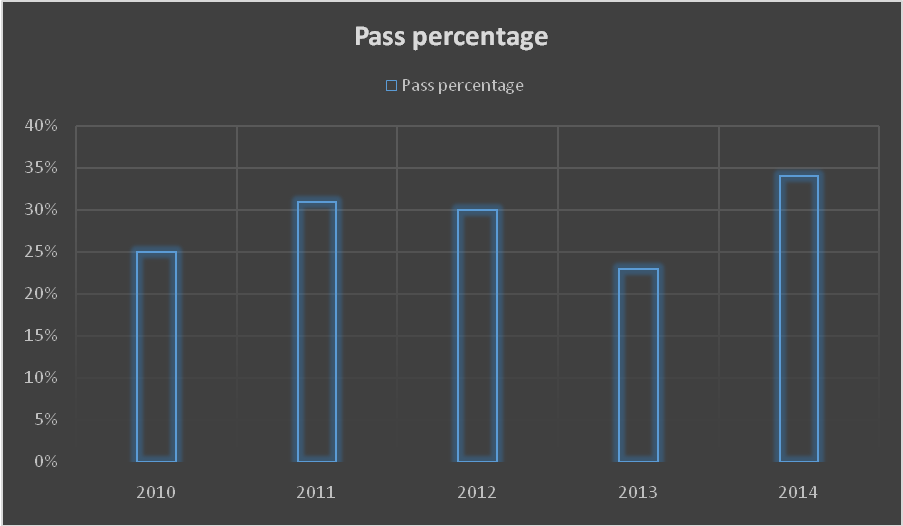
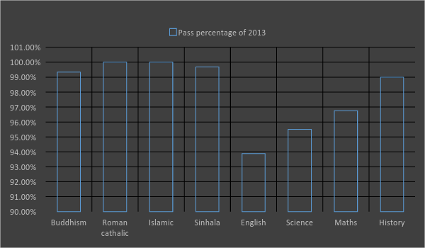
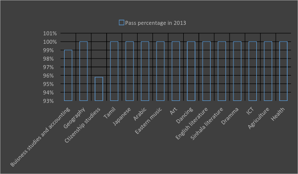
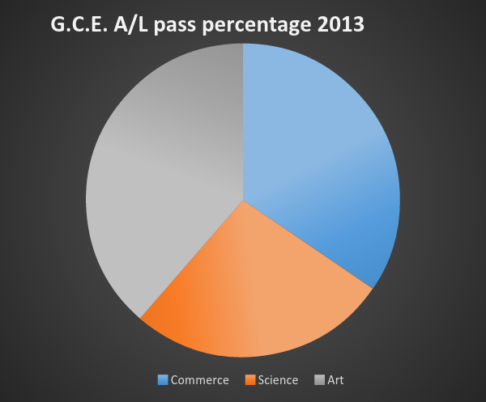

Curriculum
You can find the school curriculum for primary, middle, and upper levels form the Sri Lanka National Institute of Education web site,
http://www.nie.lk/pages/syllabus.asp
Student Performance
Grade Five Scholarship Examination

- Thilakna Movindi obtaining 193 marks and became the district first bringing credit to school in 2013
- K.O. Charithmi Senalya obtaining 196 marks and became the island third bringing credit to the school in 2014.
- P.A. Hesadi sadeera obtaining 192 marks and became the district eighth bringing credit to the school in 2014
Ordinary Level Examnation


Advance Level Examination

Following are number of Students who applied in Different Streams & Number of Students Qualified to enter the Universities
Year 2010
| Section | Number of applicants | Number of qualified to enter the university |
|---|
| Science/Biology | 153 | 93 |
| Science/Biology Agriculture | 153 | 153 |
| Science/Combined Maths | 68 | 31 |
| Commerce | 171 | 148 |
| Art | 156 | 123 |
Year 2011
| Section | Number of applicants | Number of qualified to enter the university |
| Biology | 177 | 98 |
| Biology- Agriculture | 10 | 10 |
| Combined Maths | 82 | 32 |
| Commerce | 168 | 136 |
| Art | 169 | 153 |
Year 2012
| Section | Number of applicants | Number of qualified to enter the university |
| Biology | 163 | 100 |
| Biology- Agriculture | 9 | 9 |
| Combined Maths | 82 | 42 |
| Commerce | 182 | 166 |
| Art | 126 | 111 |
Year 2013
| Section | Number of applicants | Number of qualified to enter the university |
| Biology | 163 | 103 |
| Biology- Agriculture | 9 | 9 |
| Combined Maths | 72 | 45 |
| Commerce | 155 | 140 |
| Art | 108 | 93 |